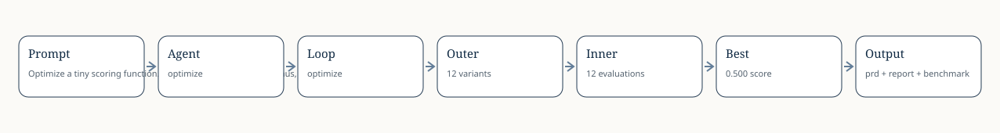

Optimize a tiny scoring function. If the loop gets stuck or plateaus, check existing literature before continuing to tweak variants.

| Round | Best Variant | Score | Signal |
|---|---|---|---|
| 1 | variant_ffa88afe01ef | 0.500 | improved |
| 2 | variant_7b880788b40b | 0.200 | continue |
| 3 | variant_27040330f48c | 0.125 | score_plateau |